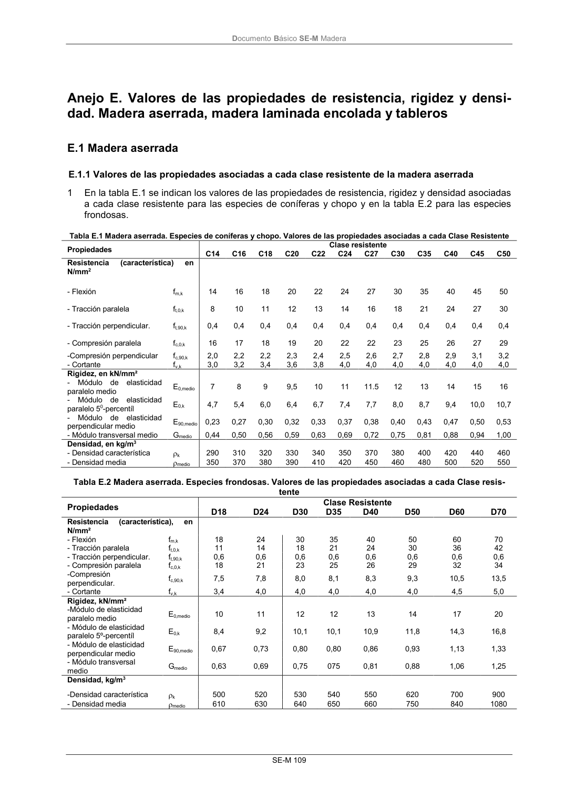
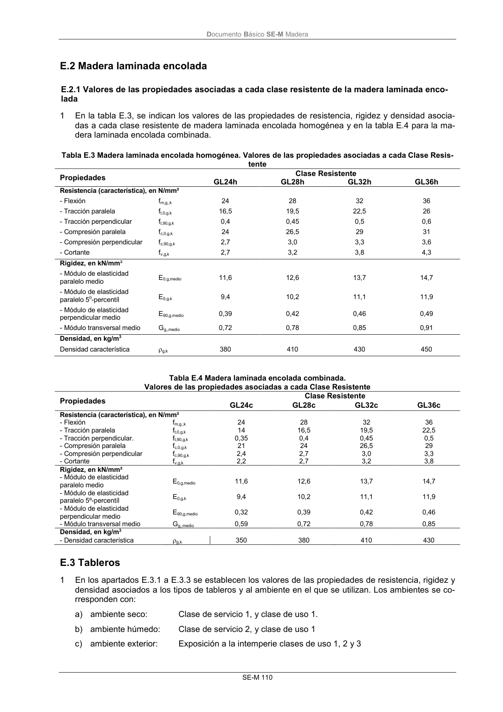

DB-SE-M · tente · versión 2019-12-20 · capa oficial
Formatos: JSON compacto · Markdown · PDF fuente
Ámbito del documento · texto del ámbito · documento y tablas
ID técnico a0178 · PDF pág. 115-116 · jerarquía no validada por persona · contrastado con el literal de la página 115 (candidato tipográfico); no validado por persona · padre: a0176
tente Propiedades Clase Resistente D18 D24 D30 D35 D40 D50 D60 D70 Resistencia (característica), en N/mm² - Flexión fm,k 18 24 30 35 40 50 60 70 - Tracción paralela ft,0,k 11 14 18 21 24 30 36 42 - Tracción perpendicular. ft,90,k 0,6 0,6 0,6 0,6 0,6 0,6 0,6 0,6 - Compresión paralela fc,0,k 18 21 23 25 26 29 32 34 -Compresión perpendicular. fc,90,k 7,5 7,8 8,0 8,1 8,3 9,3 10,5 13,5 - Cortante fv,k 3,4 4,0 4,0 4,0 4,0 4,0 4,5 5,0 Rigidez, kN/mm² -Módulo de elasticidad paralelo medio E0,medio 10 11 12 12 13 14 17 20 - Módulo de elasticidad paralelo 5º-percentíl E0,k 8,4 9,2 10,1 10,1 10,9 11,8 14,3 16,8 - Módulo de elasticidad perpendicular medio E90,medio 0,67 0,73 0,80 0,80 0,86 0,93 1,13 1,33 - Módulo transversal medio Gmedio 0,63 0,69 0,75 075 0,81 0,88 1,06 1,25 Densidad, kg/m3 -Densidad característica k 500 520 530 540 550 620 700 900 - Densidad media medio 610 630 640 650 660 750 840 1080 DocumentoBásico SE-M Madera SE-M 110


PDF fuente redistribuible: copia fiel enlazada en esta página (SHA256 verificado).